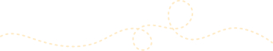
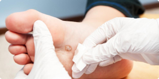

Diabetic Foot Center
糖尿病による足の問題を抱えていませんか？私たちの専門センターでは、糖尿病患者様に特化したフットケアと治療を提供しています。早期発見と適切なケアで、足の健康を守り、生活の質を向上させましょう。安心して足を任せられる専門チームが、あなたをサポートします。
CONTACT US

Diabetic Foot Center
糖尿病による足の問題を抱えていませんか？私たちの専門センターでは、糖尿病患者様に特化したフットケアと治療を提供しています。早期発見と適切なケアで、足の健康を守り、生活の質を向上させましょう。安心して足を任せられる専門チームが、あなたをサポートします。
私たちは、皆様の課題を理解し、サポートいたします。早期介入と個別の治療計画で、共に合併症の予防に取り組んでいきます。ご信頼いただきありがとうございます。皆様の健康が私たちの最優先事項です。
当センター部長 綾部忍 先生
主な業務内容
創傷とは
一言で言えば「キズ」を指します。キズによってはなかなか治癒しないものもあり、専門的なケアが必要です。早期の治療介入が重要となります。
難治性創傷治療
当センターでは、閉塞性動脈硬化症に伴う潰瘍、糖尿病性潰瘍、壊疽、褥瘡などの慢性創傷を対象に、専門チームが包括的治療を提供しています。
主な治療対象疾患

・閉塞性動脈硬化症による難治性潰瘍
・糖尿病性壊疽
・静脈うっ滞性潰瘍
・リンパ浮腫
・胼胝、鶏眼、巻き爪、陥入爪
・その他の下肢難治性潰瘍(褥瘡、熱傷、放射線治療後、術後創トラブルなど)
診療時間・診療場所（完全予約制）
診療時間
毎週月曜日 13:00〜16:00
診療場所
形成外科外来（当院1階）
難治性潰瘍とは
ここに難治性潰瘍に関する説明を記載。
当センターの特徴
ここに当センター独自の特徴や強みを記載。
実際の様子
ここに実績を示すための写真や説明を掲載。
義肢・装具
ここに義肢や装具に関する情報を記載。
実績
ここに治療件数や治癒率などのデータを掲載。
私たちは、皆様の課題を理解し、サポートいたします。早期介入と個別の治療計画で、共に合併症の予防に取り組んでいきます。ご信頼いただきありがとうございます。皆様の健康が私たちの最優先事項です。
当センター部長 綾部忍 先生